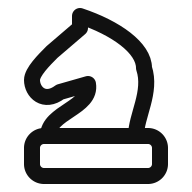
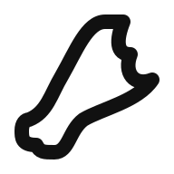
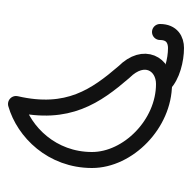
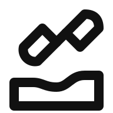
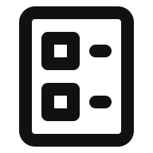
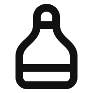
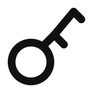
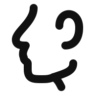
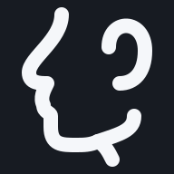
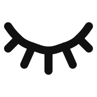

20 icon revisions · thuan-mac
Feedback for every icon: Manual fix request. Native light/dark and enlarged previews reviewed. Full automatic findings are retained for the six drawing-bound exceptions.
1. solo/chess-knight-piece-batch-019-15
Smooth horse neck, distinct muzzle and ear, wider stable pedestal.

Validation: valid; full gate: pass · exception. Keyshape: VRECT_L.
Retain the horse muzzle undercut and curved neck: the short local opening remains visible at 48px in both themes; broad neck and pedestal preserve recognition.
SVG · Result directory · Validation
2. solo/chess-queen
Restore tall tapered chess body below the three-point royal crown and larger finial.
Validation: valid; full gate: pass · exception. Keyshape: VRECT_L.
Retain the circular royal finial and stepped three-point crown above a tall chess-piece body. Small local crown openings remain clear in native light and dark previews.
SVG · Result directory · Validation
3. solo/chicken-drumstick-with-bitten-upper-edge
More natural meaty diagonal taper, rounded bone and two clear bite scallops.

Validation: valid; full gate: pass. Keyshape: SQUARE.
SVG · Result directory · Validation
4. solo/chilli
Longer pointed pepper with flowing belly and clean curved stalk.

Validation: valid; full gate: pass. Keyshape: HRECT_L.
SVG · Result directory · Validation
5. solo/chevron-vertical-collapse
Steeper mirrored chevrons restore vertical compression direction.


Validation: valid; full gate: pass. Keyshape: VRECT_L.
SVG · Result directory · Validation
6. solo/chevron-inward-vertical
Equal-angle inward chevrons with a clear central gap.

Validation: valid; full gate: pass. Keyshape: VRECT_L.
SVG · Result directory · Validation
7. solo/christmas-sleigh
Restore gently sloping seat back, raised front lip and fine runner supports.
Validation: valid; full gate: pass. Keyshape: HRECT_L.
SVG · Result directory · Validation
8. solo/chisel-carving-wood
Restore separate chisel blade and handle above a flowing carved wood surface.

Validation: invalid; full gate: pass · exception. Keyshape: SQUARE.
Allow the wood base to reach y=47 ink inside the 48px canvas, preserving a readable separate chisel blade, handle and wood grain recess. All spacing checks pass.
SVG · Result directory · Validation
9. solo/circinus-state
Smaller circular hinge and longer splayed compass legs; deliberate diagonal posture.


Validation: valid; full gate: pass. Keyshape: SQUARE.
SVG · Result directory · Validation
10. solo/circinus
Rebalance drafting compass around smaller hinge and longer pointed legs.


Validation: valid; full gate: pass. Keyshape: SQUARE.
SVG · Result directory · Validation
11. solo/circular-head-profile-bust
Restore broad rounded shoulder block with circular detached head and exact 4px ink gap.
Validation: valid; full gate: pass. Keyshape: VRECT_L.
SVG · Result directory · Validation
12. solo/circular-check-mark-symbol-solo
Extend the open circular ring and balance a crisp check inside it.
Validation: valid; full gate: pass. Keyshape: CIRCLE.
SVG · Result directory · Validation
13. solo/checklist-document-for-tasks-solo
Restore rounded document, square checkbox rows and visible horizontal text strokes.

Validation: invalid; full gate: pass · exception. Keyshape: VRECT_L.
Allow 3px ink clearances between checkbox, page and text strokes. Both square openings are 4px wide; paired rows remain clearly separated and legible at 48px.
SVG · Result directory · Validation
14. solo/champagne-sparkling-wine-bottle-batch-006-15
Slender champagne neck with rounded cap, flowing shoulders and rounded bottle base.

Validation: valid; full gate: pass. Keyshape: VRECT_M.
SVG · Result directory · Validation
15. solo/classic-key
Larger circular key bow, full length terminal tooth and balanced inner tooth.

Validation: valid; full gate: pass. Keyshape: SQUARE.
SVG · Result directory · Validation
16. solo/classical-piano
Restore grand piano silhouette, level keyboard edge and distinct even keys and legs.
Validation: valid; full gate: pass. Keyshape: SQUARE.
SVG · Result directory · Validation
17. solo/cleaning-sponge
Round both sponge pores and soften the asymmetric waisted silhouette.
Validation: invalid; full gate: pass · exception. Keyshape: SQUARE.
Retain two open, unequal circular pores instead of a solid dot. Approximately 3.1px outer ink clearance remains clear in native light and dark themes.
SVG · Result directory · Validation
18. solo/close-side-view-face
Flowing nose, readable lips and natural chin with larger clear ear opening.


Validation: valid; full gate: pass. Keyshape: VRECT_L.
SVG · Result directory · Validation
19. solo/closed-eye-curved-lashes
Shallower graceful eyelid with five fanned lashes and exact shared attachment nodes.

Validation: invalid; full gate: pass · exception. Keyshape: HRECT_M.
Use a naturally shallow eyelid envelope with ink y=11..37 instead of stretching it to y=8..40. Five evenly fanned lashes and continuous lid read clearly at 48px.
SVG · Result directory · Validation
20. solo/closed-envelope-batch-020-12
Rounded envelope corners and gently rounded flap tip restore the source construction.
Validation: valid; full gate: pass. Keyshape: HRECT_M.
SVG · Result directory · Validation
{kind=link}
{kind=link}
{kind=link}
{kind=link}
{kind=link}
{kind=link}
{kind=link}
{kind=link}
{kind=link}
{kind=link}
{kind=link}
{kind=link}
{kind=link}
{kind=link}
{kind=link}
{kind=link}
{kind=link}
{kind=link}
{kind=link}
{kind=link}